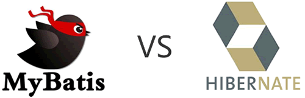

MyBatis和Hibernate的区别
Hibernate 和 MyBatis 都是目前业界中主流的对象关系映射（ORM）框架，它们的主要区别如下。
MyBatis 的二级缓存配置在每个具体的表-对象映射中进行详细配置，这样针对不同的表可以自定义不同的缓存机制。并且 Mybatis 可以在命名空间中共享相同的缓存配置和实例，通过 Cache-ref 来实现。
Hibernate 对查询对象有着良好的管理机制，用户无需关心 SQL。所以在使用二级缓存时如果出现脏数据，系统会报出错误并提示。而 MyBatis 在这一方面，使用二级缓存时需要特别小心。如果不能完全确定数据更新操作的波及范围，避免 Cache 的盲目使用。否则脏数据的出现会给系统的正常运行带来很大的隐患。
Hibernate 适合需求明确、业务固定的项目，例如 OA 项目、ERP 项目和 CRM 项目等。
对于性能要求不太苛刻的系统，比如管理系统、ERP 等推荐使用 Hibernate，而对于性能要求高、响应快、灵活的系统则推荐使用 MyBatis。
1）sql 优化方面
- Hibernate 使用 HQL（Hibernate Query Language）语句，独立于数据库。不需要编写大量的 SQL，就可以完全映射，但会多消耗性能，且开发人员不能自主的进行 SQL 性能优化。提供了日志、缓存、级联（级联比 MyBatis 强大）等特性。
- MyBatis 需要手动编写 SQL，所以灵活多变。支持动态 SQL、处理列表、动态生成表名、支持存储过程。工作量相对较大。
2）开发方面
- MyBatis 是一个半自动映射的框架，因为 MyBatis 需要手动匹配 POJO 和 SQL 的映射关系。
- Hibernate 是一个全表映射的框架，只需提供 POJO 和映射关系即可。

3）缓存机制比较
Hibernate 的二级缓存配置在 SessionFactory 生成的配置文件中进行详细配置，然后再在具体的表-对象映射中配置缓存。MyBatis 的二级缓存配置在每个具体的表-对象映射中进行详细配置，这样针对不同的表可以自定义不同的缓存机制。并且 Mybatis 可以在命名空间中共享相同的缓存配置和实例，通过 Cache-ref 来实现。
Hibernate 对查询对象有着良好的管理机制，用户无需关心 SQL。所以在使用二级缓存时如果出现脏数据，系统会报出错误并提示。而 MyBatis 在这一方面，使用二级缓存时需要特别小心。如果不能完全确定数据更新操作的波及范围，避免 Cache 的盲目使用。否则脏数据的出现会给系统的正常运行带来很大的隐患。
4）Hibernate 优势
- Hibernate 的 DAO 层开发比 MyBatis 简单，Mybatis 需要维护 SQL 和结果映射。
- Hibernate 对对象的维护和缓存要比 MyBatis 好，对增删改查的对象的维护要方便。
- Hibernate 数据库移植性很好，MyBatis 的数据库移植性不好，不同的数据库需要写不同 SQL。
- Hibernate 有更好的二级缓存机制，可以使用第三方缓存。MyBatis 本身提供的缓存机制不佳。
5）Mybatis优势
- MyBatis 可以进行更为细致的 SQL 优化，可以减少查询字段。
- MyBatis 容易掌握，而 Hibernate 门槛较高。
6）应用场景
MyBatis 适合需求多变的互联网项目，例如电商项目、金融类型、旅游类、售票类项目等。Hibernate 适合需求明确、业务固定的项目，例如 OA 项目、ERP 项目和 CRM 项目等。
总结
总的来说，MyBatis 是一个小巧、方便、高效、简单、直接、半自动化的持久层框架，Hibernate 是一个强大、方便、高效、复杂、间接、全自动化的持久层框架。对于性能要求不太苛刻的系统，比如管理系统、ERP 等推荐使用 Hibernate，而对于性能要求高、响应快、灵活的系统则推荐使用 MyBatis。
关注公众号「站长严长生」，在手机上阅读所有教程，随时随地都能学习。内含一款搜索神器，免费下载全网书籍和视频。

微信扫码关注公众号